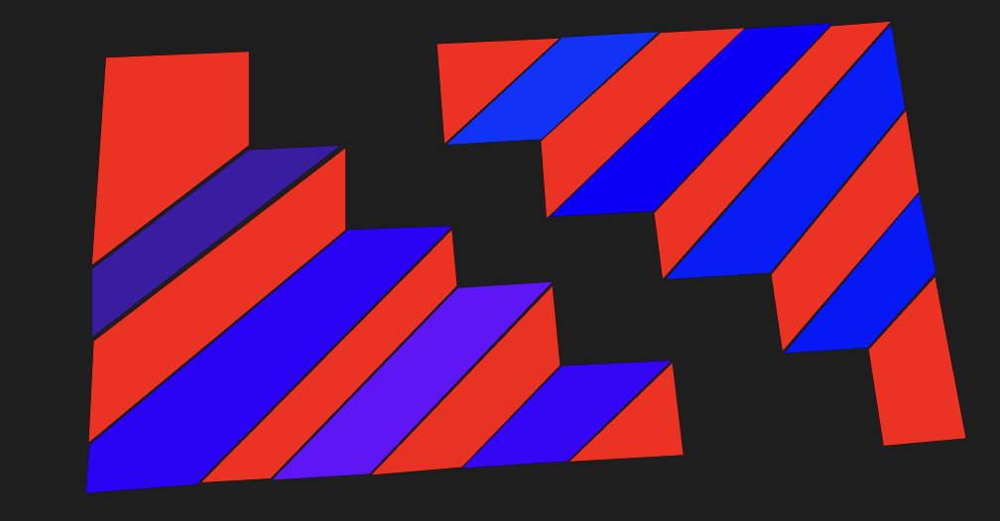

Joshua Hind
Hi, My name is Josh and I studied a UAL Level 3 Extended Diploma in Creative Media Production & Technology. Which I received a 2 distinctions over the 2 years of study. Now I am at University of West England Bristol studying Digital Media Bsc.

WildCat
For this compostion i chose a low poly art style to create an animal face. This one shows a cat style of graphic

Crazy Stairs
This composition shows a staircase illusion style of graphic. Which is made of 2D shapes which gives a 3D effect.